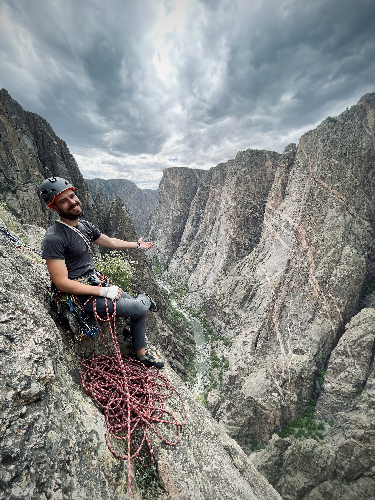
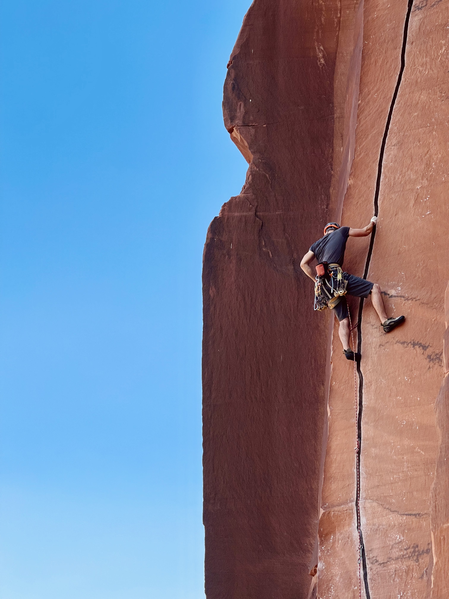

Jared
Christiansen
Boston, MA
I'm a startup generalist disguised as a UX designer. I've built MVPs from scratch, coded production-ready apps, and turned napkin sketches into real, revenue-generating products.
UX is my foundation — I think deeply about users, flows, and clarity — but I also build. I thrive in early-stage chaos where the team is small, the stakes are high, and you need someone who can design, build, and launch without waiting on handoffs.
📍 Boston, MA
I build, not just design.
Most designers hand off to engineers. I write the code. That means faster iteration, fewer translation errors, and a product that ships looking like it was designed.
I validate before I build.
The best way to save a month of development is one afternoon talking to real users — or standing in a Domino's manually testing the thing you were about to build. I've done both.
I work best at zero-to-one.
Give me ambiguity, a small team, and a problem worth solving. I know how to navigate the phase where nothing is defined — and get to something real without burning time on the wrong thing.


When there’s snow, I ski. When there isn’t, I’m usually hiking or planning the next trip.
Indian Creek, Utah · Black Canyon of the Gunnison, CO